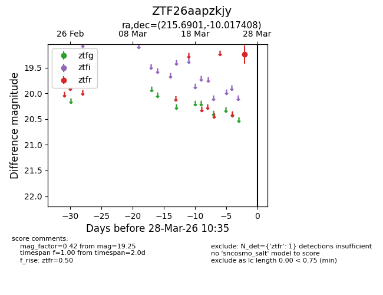
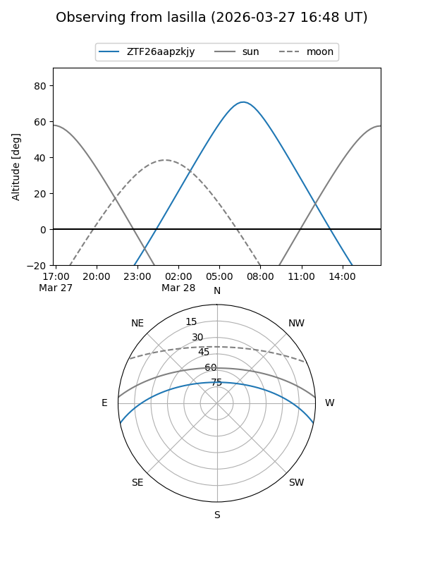
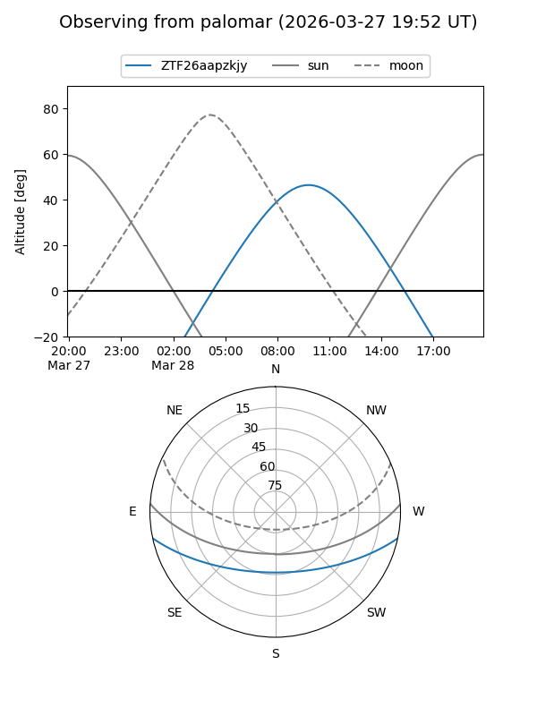

ZTF26aapzkjy
Target ZTF26aapzkjy at 2026-03-28 10:38
Aliases and brokers:
FINK: link
Lasair: link
ALeRCE: link
alt names
ZTF26aapzkjy (ztf,fink_ztf)
Coordinates:
equatorial (ra, dec) = 215.6901,-10.01741
equatorial (HMS+DMS) = 14:22:45.62,-10:01:02.67
galactic (l, b) = (336.8296,+46.75583)
Flags:
Photometry:
last ztfr=19.25
1 ztfr detections
Lightcurve

Visibility


Additional plots